Last updated: 2023-06-26
Checks: 6 1
Knit directory:
Temperature_x_Diet_D.melanogaster/
This reproducible R Markdown analysis was created with workflowr (version 1.7.0). The Checks tab describes the reproducibility checks that were applied when the results were created. The Past versions tab lists the development history.
The R Markdown file has unstaged changes. To know which version of
the R Markdown file created these results, you’ll want to first commit
it to the Git repo. If you’re still working on the analysis, you can
ignore this warning. When you’re finished, you can run
wflow_publish to commit the R Markdown file and build the
HTML.
Great job! The global environment was empty. Objects defined in the global environment can affect the analysis in your R Markdown file in unknown ways. For reproduciblity it’s best to always run the code in an empty environment.
The command set.seed(20200903) was run prior to running
the code in the R Markdown file. Setting a seed ensures that any results
that rely on randomness, e.g. subsampling or permutations, are
reproducible.
Great job! Recording the operating system, R version, and package versions is critical for reproducibility.
Nice! There were no cached chunks for this analysis, so you can be confident that you successfully produced the results during this run.
Great job! Using relative paths to the files within your workflowr project makes it easier to run your code on other machines.
Great! You are using Git for version control. Tracking code development and connecting the code version to the results is critical for reproducibility.
The results in this page were generated with repository version 5a9dafb. See the Past versions tab to see a history of the changes made to the R Markdown and HTML files.
Note that you need to be careful to ensure that all relevant files for
the analysis have been committed to Git prior to generating the results
(you can use wflow_publish or
wflow_git_commit). workflowr only checks the R Markdown
file, but you know if there are other scripts or data files that it
depends on. Below is the status of the Git repository when the results
were generated:
Ignored files:
Ignored: .Rhistory
Ignored: .Rproj.user/
Untracked files:
Untracked: FecF1_compound.pdf
Untracked: FecF1_compound.png
Untracked: Sig_effects_on_male_mating_behaviour_F2_plots_w_means.pdf
Untracked: appraise.latF1mat.gamm1.png
Untracked: appraise.latF1mat.gamm1log.png
Untracked: data/fecF0.csv
Untracked: data/fecF1.csv
Untracked: data/malebehavF0.csv
Untracked: data/malebehavF1.csv
Untracked: data/malebehavF2.csv
Untracked: data/malebehavF3.csv
Untracked: data/survivalF1.csv
Untracked: fec.F1.plot.pdf
Untracked: latency_F0_mat_predicted.pdf
Untracked: male_latency_F2_mat_predicted.pdf
Untracked: male_latency_F2_pat_predicted.pdf
Untracked: male_mating_behaviour_F0_plots.pdf
Untracked: male_mating_behaviour_F0_plots.png
Untracked: plotF0_fecundity.pdf
Untracked: plotF0_fecundity.png
Untracked: plotF0_fecundity_rev.pdf
Untracked: plotF0_latency.pdf
Untracked: plotF0_latency.png
Untracked: plotF0_latencyTemponly.pdf
Untracked: plotF0_latencyTemponly.png
Untracked: plotF0_latency_rev.pdf
Untracked: plotF1_fecundity.pdf
Untracked: plotF1_fecundity.png
Untracked: plotF1_fecundity_mat.pdf
Untracked: plotF1_fecundity_mat_rev.pdf
Untracked: plotF1_fecundity_mat_rev_afterINK.pdf
Untracked: plotF1_fecundity_pat.pdf
Untracked: plotF1_fecundity_pat_rev.pdf
Untracked: plotF1_fecundity_pat_rev_aftterINK.pdf
Untracked: plotF1_latency.pdf
Untracked: plotF1_latency.png
Untracked: plotF1pat_duration.pdf
Untracked: plotF1pat_duration.png
Untracked: plotF1pat_duration_rev.pdf
Untracked: plotF2_mat+pat_latency+dur.png
Untracked: plotF2_mat_latency.pdf
Untracked: plotF2_mat_latency.png
Untracked: plotF2_mat_latency_rev.pdf
Untracked: plotF2_pat_dur.pdf
Untracked: plotF2_pat_dur.png
Untracked: plotF2_pat_dur_rev.pdf
Untracked: survivalcurves.pdf
Untracked: survivalcurves.png
Untracked: survivalcurves8-6-21.pdf
Untracked: survivalcurves8-6-21.png
Untracked: survivalcurves_rev20-3-2023.jpg
Untracked: survivalcurves_rev20-3-2023.pdf
Untracked: survivalcurves_rev20-3-2023.svg
Untracked: survivalcurves_rev20-3-2023_afterINK.pdf
Unstaged changes:
Modified: _workflowr.yml
Modified: analysis/fecundity.Rmd
Modified: analysis/matingbehaviour.Rmd
Modified: analysis/survival.Rmd
Modified: data/survival.csv
Note that any generated files, e.g. HTML, png, CSS, etc., are not included in this status report because it is ok for generated content to have uncommitted changes.
These are the previous versions of the repository in which changes were
made to the R Markdown (analysis/survival.Rmd) and HTML
(docs/survival.html) files. If you’ve configured a remote
Git repository (see ?wflow_git_remote), click on the
hyperlinks in the table below to view the files as they were in that
past version.
| File | Version | Author | Date | Message |
|---|---|---|---|---|
| html | 5a9dafb | zajitschek | 2023-06-25 | Build site. |
| Rmd | b9f595a | zajitschek | 2023-06-25 | 25-6-2023 |
| html | e99ccd9 | zajitschek | 2020-09-03 | Build site. |
| html | f85e01c | zajitschek | 2020-09-03 | Build site. |
| Rmd | 57bbb26 | zajitschek | 2020-09-03 | Analyze survival |
library(readr) # read data
library(dplyr) # data structure
library(reshape2) # data structure
library(tidyverse) # data structure
library(rcompanion) # mean and median (+- bootstrapped CI)
library(survival) # survival analysis
library(coxme) # mixed-effects Cox proportional hazard model
library(lme4) # generalized linear mixed-effects model
library(mgcv) # generalized additive models for Cox regression
library(MuMIn) # AIC results table
library(ggplot2) # plot
library(survminer) # plot
library(sjPlot) # plot
library(kableExtra) # table formatting
library(splines) # spline functions
kable.table <- function(df) {
kable(df, "html") %>%
kable_styling() %>%
scroll_box(width = "100%", height = "300px", box_css = "border: 0px;")
}#F0 survival data
survival <- read_csv("./data/survival.csv")
survival$diet <- as.factor(survival$diet)
survival$vial_id <- as.factor(survival$vial_id)
survival$rep <- as.factor(survival$rep)
#F1 survival data
survivalF1 <- read_csv("./data/survivalF1.csv")
survivalF1$par_diet <- as.factor(survivalF1$par_diet)
survivalF1$vial_id <- as.factor(survivalF1$vial_id)
survivalF1$rep <- as.factor(survivalF1$rep)# plot(survival$lifespan) # ok: no off-values/outliers
# max(survival$lifespan) # max. lifespan = 152 days
# Bootstrap replicates for CI
boot.ls <- groupwiseMean(lifespan ~ sex*temperature*diet, data = survival, boot = T, bca = T)
medians.F1 <- survival %>% group_by(temperature, diet, sex) %>%
summarise(., mean = mean(lifespan), se = sd(lifespan)/sqrt(length(lifespan)), sd = sd(lifespan),
median = median(lifespan), n_vials = n_distinct(vial_id), n_inds = n()) %>%
dplyr::select(sex, median, n_vials, n_inds)
boot.ls2 <- left_join(boot.ls, medians.F1) %>%
dplyr::select(- c(n, Mean, Conf.level:Trad.upper))
kable.table(boot.ls2)| sex | temperature | diet | Boot.mean | Bca.lower | Bca.upper | median | n_vials | n_inds |
|---|---|---|---|---|---|---|---|---|
| female | 21 | 0.4 | 53.3 | 46.7 | 60.9 | 36.5 | 10 | 100 |
| female | 21 | 1 | 119.0 | 114.0 | 123.0 | 126.0 | 10 | 100 |
| female | 21 | 1.5 | 122.0 | 117.0 | 126.0 | 126.0 | 10 | 100 |
| female | 23 | 0.4 | 51.5 | 47.5 | 55.6 | 52.0 | 10 | 100 |
| female | 23 | 1 | 69.1 | 66.6 | 70.9 | 71.5 | 10 | 100 |
| female | 23 | 1.5 | 70.1 | 68.1 | 71.8 | 73.0 | 10 | 100 |
| female | 25 | 0.4 | 52.4 | 49.8 | 54.6 | 54.0 | 10 | 100 |
| female | 25 | 1 | 56.4 | 54.0 | 58.7 | 56.0 | 10 | 100 |
| female | 25 | 1.5 | 53.9 | 51.9 | 55.5 | 56.0 | 10 | 100 |
| female | 27 | 0.4 | 45.1 | 43.0 | 46.8 | 49.0 | 10 | 100 |
| female | 27 | 1 | 40.4 | 38.7 | 41.8 | 40.0 | 10 | 100 |
| female | 27 | 1.5 | 40.3 | 38.7 | 41.6 | 42.0 | 10 | 100 |
| female | 29 | 0.4 | 38.6 | 36.4 | 40.4 | 40.0 | 10 | 100 |
| female | 29 | 1 | 37.7 | 35.8 | 39.3 | 40.0 | 10 | 100 |
| female | 29 | 1.5 | 34.0 | 32.2 | 35.7 | 35.0 | 10 | 100 |
| male | 21 | 0.4 | 77.7 | 73.0 | 82.2 | 75.0 | 10 | 100 |
| male | 21 | 1 | 73.6 | 69.7 | 77.3 | 68.0 | 10 | 100 |
| male | 21 | 1.5 | 77.6 | 74.0 | 81.5 | 76.0 | 10 | 100 |
| male | 23 | 0.4 | 48.1 | 45.8 | 50.3 | 47.0 | 10 | 100 |
| male | 23 | 1 | 49.5 | 47.3 | 51.8 | 49.0 | 10 | 100 |
| male | 23 | 1.5 | 45.8 | 43.8 | 47.8 | 45.0 | 10 | 100 |
| male | 25 | 0.4 | 39.3 | 37.8 | 40.9 | 40.0 | 10 | 100 |
| male | 25 | 1 | 37.3 | 35.8 | 38.7 | 38.0 | 10 | 100 |
| male | 25 | 1.5 | 34.1 | 32.7 | 35.7 | 33.0 | 10 | 100 |
| male | 27 | 0.4 | 34.3 | 32.8 | 35.7 | 35.0 | 10 | 100 |
| male | 27 | 1 | 29.5 | 27.9 | 30.9 | 29.5 | 10 | 100 |
| male | 27 | 1.5 | 26.1 | 25.1 | 27.4 | 26.0 | 10 | 100 |
| male | 29 | 0.4 | 21.3 | 19.7 | 23.0 | 24.0 | 10 | 100 |
| male | 29 | 1 | 19.3 | 18.1 | 20.8 | 19.0 | 10 | 100 |
| male | 29 | 1.5 | 20.5 | 19.1 | 21.8 | 24.0 | 10 | 100 |
mycols <- colors()[c(30, 62, 119, 504, 554)]
# 1) Diet on x-, lifespan on y-axis
plot.meanlifespan.m <- ggplot(data= subset(boot.ls, sex== "male"), aes(x= as.factor(diet), y= Boot.mean, fill= as.factor(temperature))) +
scale_fill_manual(values= mycols, name = "Temperature") +
geom_bar(position=position_dodge(), stat = "identity", colour="black") +
geom_errorbar(aes(ymin= Bca.lower, ymax= Bca.upper), width=.4, colour="black",
position=position_dodge(0.9)) +
expand_limits(y = 120) +
ylab("Lifespan (days)") +
xlab("Diet") +
ggtitle("Male lifespan") +
theme_bw(base_size = 18)+
theme(panel.grid.major = element_blank(),panel.grid.minor = element_blank(),
panel.border = element_blank(), legend.position = "none",
axis.line.x = element_line(), axis.line.y = element_line())
plot.meanlifespan.f <- ggplot(data= subset(boot.ls, sex== "female"), aes(x= as.factor(diet), y= Boot.mean, fill= as.factor(temperature))) +
scale_fill_manual(values= mycols, name = "Temp") +
geom_bar(position=position_dodge(), stat = "identity", colour="black") +
#geom_point(size = 3.5, position=position_dodge(0.1)) +
geom_errorbar(aes(ymin= Bca.lower, ymax= Bca.upper), width=.4, colour="black",
position=position_dodge(0.9)) +
expand_limits(y = 120) +
ylab("Lifespan (days)") +
xlab("Diet") +
ggtitle("Female lifespan") +
theme_bw(base_size = 18)+
theme(panel.grid.major = element_blank(),panel.grid.minor = element_blank(),
panel.border = element_blank(), legend.position = c(.89, .9), legend.text = element_text(size = 10), legend.title = element_text(size = 10), legend.key.size = unit(0.6, "lines"),
axis.line.x = element_line(), axis.line.y = element_line())
ggarrange(plot.meanlifespan.m, plot.meanlifespan.f,
labels = c("a", "b"),
ncol = 2, nrow = 1)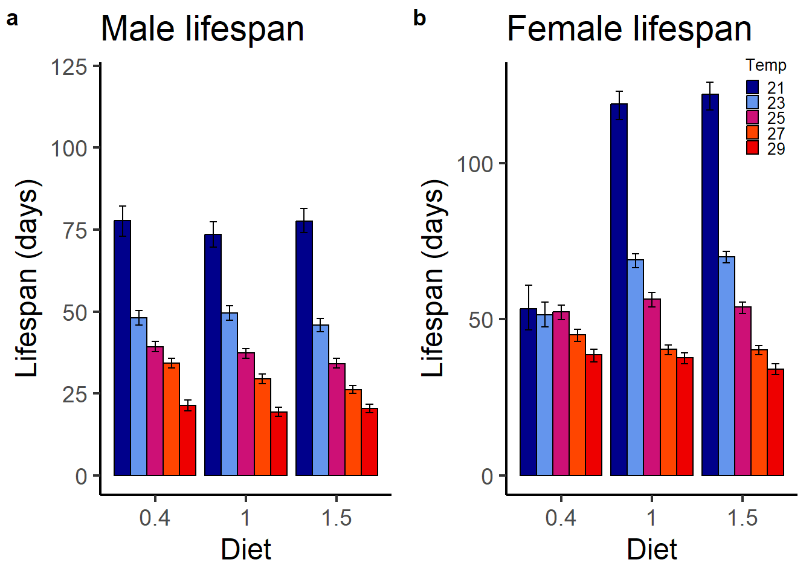
# 2) Temperature on x-, lifespan on y-axis
plot.meanlifespan2.m <- ggplot(data= subset(boot.ls, sex== "male"), aes(x= as.factor(temperature), y= Boot.mean, fill= as.factor(diet))) +
scale_fill_manual(values= mycols, name = "Diet") +
geom_bar(position=position_dodge(), stat = "identity", colour="black") +
geom_errorbar(aes(ymin= Bca.lower, ymax= Bca.upper), width=.4, colour="black",
position=position_dodge(0.9)) +
expand_limits(y = 120) +
ylab("Lifespan (days)") +
xlab("Temperature") +
ggtitle("Male lifespan") +
theme_bw(base_size = 18)+
theme(panel.grid.major = element_blank(),panel.grid.minor = element_blank(),
panel.border = element_blank(), legend.position = "none",
axis.line.x = element_line(), axis.line.y = element_line())
plot.meanlifespan2.f <- ggplot(data= subset(boot.ls, sex== "female"), aes(x= as.factor(temperature), y= Boot.mean, fill= as.factor(diet))) +
scale_fill_manual(values= mycols, name = "Diet") +
geom_bar(position=position_dodge(), stat = "identity", colour="black") +
geom_errorbar(aes(ymin= Bca.lower, ymax= Bca.upper), width=.4, colour="black",
position=position_dodge(0.9)) +
expand_limits(y = 120) +
ylab("Lifespan (days)") +
xlab("Temperature") +
ggtitle("Female lifespan") +
theme_bw(base_size = 18)+
theme(panel.grid.major = element_blank(),panel.grid.minor = element_blank(),
panel.border = element_blank(), legend.position = c(.8, .8), legend.text = element_text(size = 10), legend.title = element_text(size = 10), legend.key.size = unit(0.6, "lines"),
axis.line.x = element_line(), axis.line.y = element_line())
ggarrange(plot.meanlifespan2.m, plot.meanlifespan2.f,
labels = c("c", "d"),
ncol = 2, nrow = 1)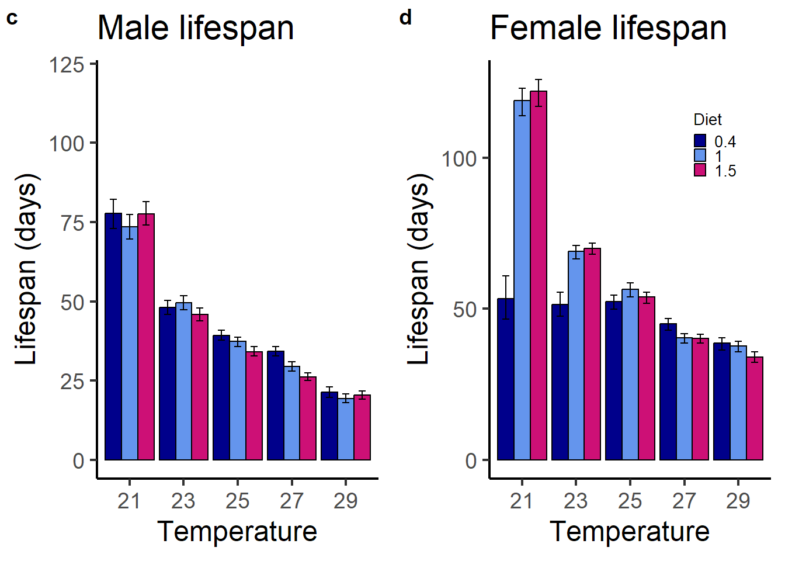
survival$groups <- interaction(survival$sex, survival$temperature, survival$diet)
surv.m21 <- survfit(Surv(lifespan, status) ~ groups, conf.type = "plain", data = subset(survival, sex == "male" & temperature == "21"))
surv.m23 <- survfit(Surv(lifespan, status) ~ groups, conf.type = "plain", data = subset(survival, sex == "male" & temperature == "23"))
surv.m25 <- survfit(Surv(lifespan, status) ~ groups, conf.type = "plain", data = subset(survival, sex == "male" & temperature == "25"))
surv.m27 <- survfit(Surv(lifespan, status) ~ groups, conf.type = "plain", data = subset(survival, sex == "male" & temperature == "27"))
surv.m29 <- survfit(Surv(lifespan, status) ~ groups, conf.type = "plain", data = subset(survival, sex == "male" & temperature == "29"))
surv.f21 <- survfit(Surv(lifespan, status) ~ groups, conf.type = "plain", data = subset(survival, sex == "female" & temperature == "21"))
surv.f23 <- survfit(Surv(lifespan, status) ~ groups, conf.type = "plain", data = subset(survival, sex == "female" & temperature == "23"))
surv.f25 <- survfit(Surv(lifespan, status) ~ groups, conf.type = "plain", data = subset(survival, sex == "female" & temperature == "25"))
surv.f27 <- survfit(Surv(lifespan, status) ~ groups, conf.type = "plain", data = subset(survival, sex == "female" & temperature == "27"))
surv.f29 <- survfit(Surv(lifespan, status) ~ groups, conf.type = "plain", data = subset(survival, sex == "female" & temperature == "29"))
# Set upper lifespan limit for all survival plots
xmax <- 154 # max(survival$lifespan) + 2
ggsurvplot(surv.m21, title = "(a) Males at 21 degree Celsius",
xlim = c(0, xmax), xlab = "Age (days)", break.time.by = 20,
risk.table = F, conf.int = T, pval = F, legend = "right",
legend.title = "", data = subset(survival, sex=="male" & temperature == "21"),
legend.labs = c("restricted", "standard", "rich"))
ggsurvplot(surv.m23, title = "(c) males at 23 degree Celsius",
xlim = c(0, xmax), xlab = "Age (days)", break.time.by = 20,
risk.table = F, conf.int = T, pval = F, legend = "right",
legend.title = "", data = subset(survival, sex=="male" & temperature == "23"),
legend.labs = c("restricted", "standard", "rich"))
ggsurvplot(surv.m25, title = "(e) males at 25 degree Celsius",
xlim = c(0, xmax), xlab = "Age (days)", break.time.by = 20,
risk.table = F, conf.int = T, pval = F, legend = "right",
legend.title = "", data = subset(survival, sex=="male" & temperature == "25"),
legend.labs = c("restricted", "standard", "rich"))
ggsurvplot(surv.m27, title = "(g) males at 27 degree Celsius",
xlim = c(0, xmax), xlab = "Age (days)", break.time.by = 20,
risk.table = F, conf.int = T, pval = F, legend = "right",
legend.title = "", data = subset(survival, sex=="male" & temperature == "27"),
legend.labs = c("restricted", "standard", "rich"))
ggsurvplot(surv.m29, title = "(i) males at 29 degree Celsius",
xlim = c(0, xmax), xlab = "Age (days)", break.time.by = 20,
risk.table = F, conf.int = T, pval = F, legend = "right",
legend.title = "", data = subset(survival, sex=="male" & temperature == "29"),
legend.labs = c("restricted", "standard", "rich"))
ggsurvplot(surv.f21, title = "(b) females at 21 degree Celsius",
xlim = c(0, xmax), xlab = "Age (days)", break.time.by = 20,
risk.table = F, conf.int = T, pval = F, legend = "right",
legend.title = "", legend.labs = c("restricted", "standard", "rich"),
data = subset(survival, sex=="female" & temperature == "21"))
ggsurvplot(surv.f23, title = "(d) females at 23 degree Celsius",
xlim = c(0, xmax), xlab = "Age (days)", break.time.by = 20,
risk.table = F, conf.int = T, pval = F, legend = "right",
legend.title = "", legend.labs = c("restricted", "standard", "rich"),
data = subset(survival, sex=="female" & temperature == "23"))
ggsurvplot(surv.f25, title = "(f) females at 25 degree Celsius",
xlim = c(0, xmax), xlab = "Age (days)", break.time.by = 20,
risk.table = F, conf.int = T, pval = F, legend = "right",
legend.title = "", legend.labs = c("restricted", "standard", "rich"),
data = subset(survival, sex=="female" & temperature == "25"))
ggsurvplot(surv.f27, title = "(h) females at 27 degree Celsius",
xlim = c(0, xmax), xlab = "Age (days)", break.time.by = 20,
risk.table = F, conf.int = T, pval = F, legend = "right",
legend.title = "", legend.labs = c("restricted", "standard", "rich"),
data = subset(survival, sex=="female" & temperature == "27"))
ggsurvplot(surv.f29, title = "(j) females at 29 degree Celsius",
xlim = c(0, xmax), xlab = "Age (days)", break.time.by = 20,
risk.table = F, conf.int = T, pval = F, legend = "right",
legend.title = "", legend.labs = c("restricted", "standard", "rich"),
data = subset(survival, sex=="female" & temperature == "29"))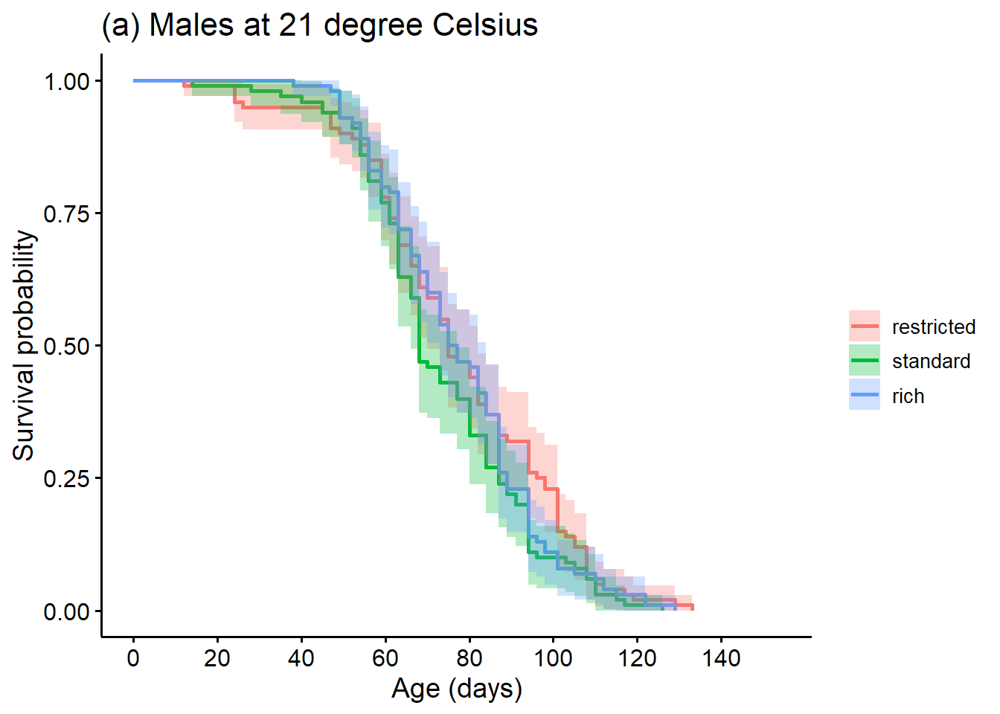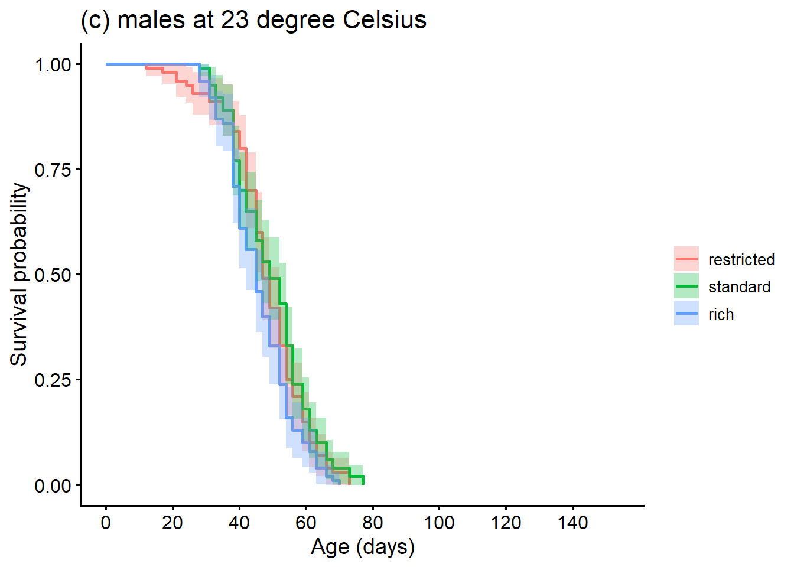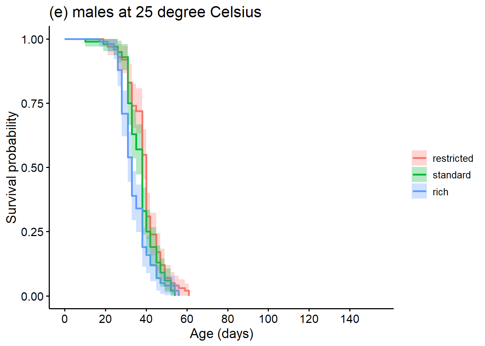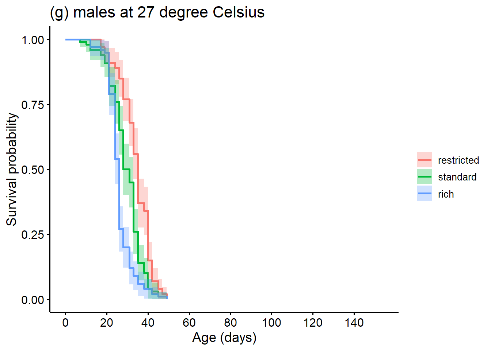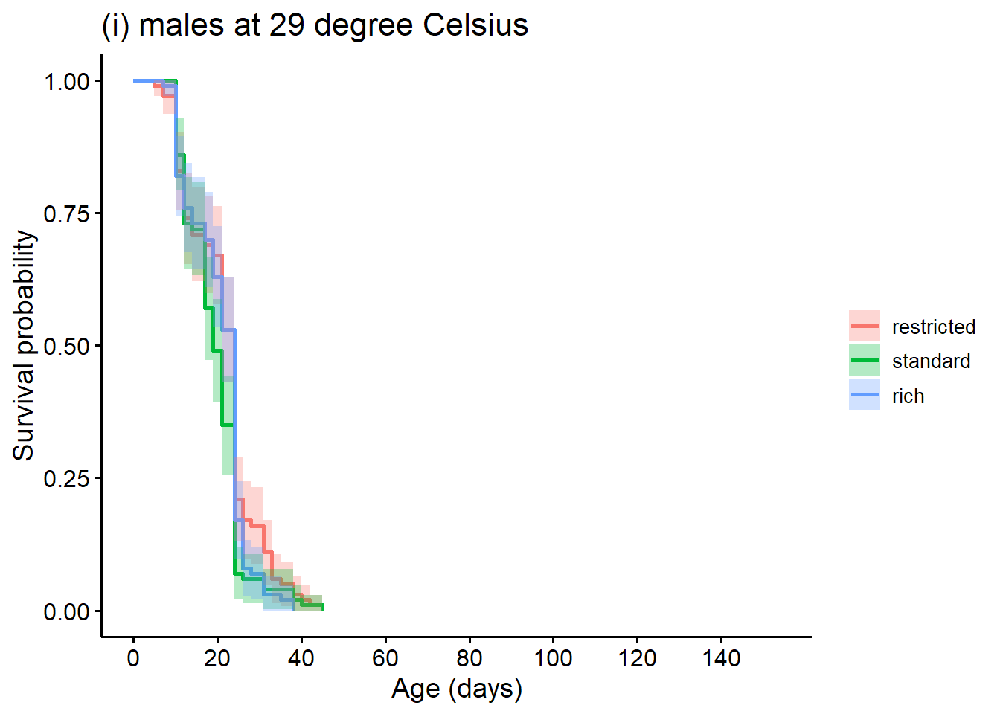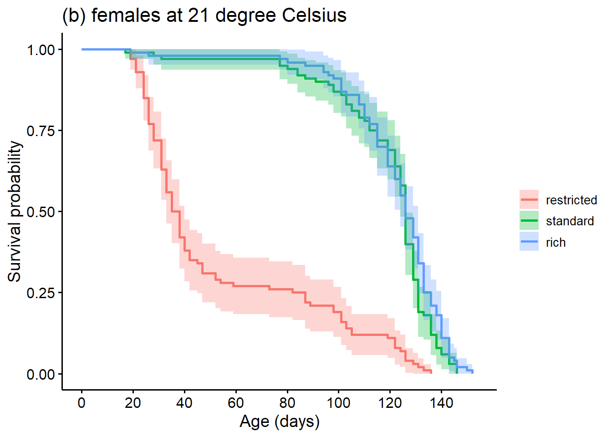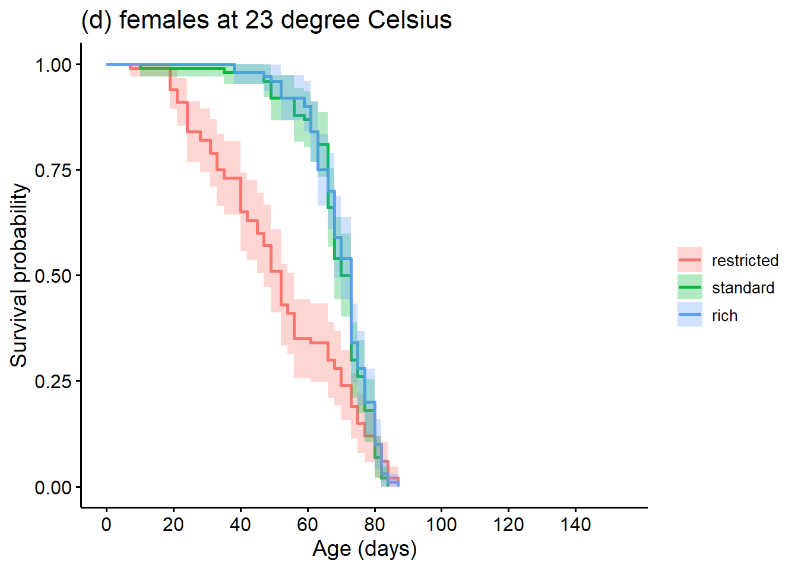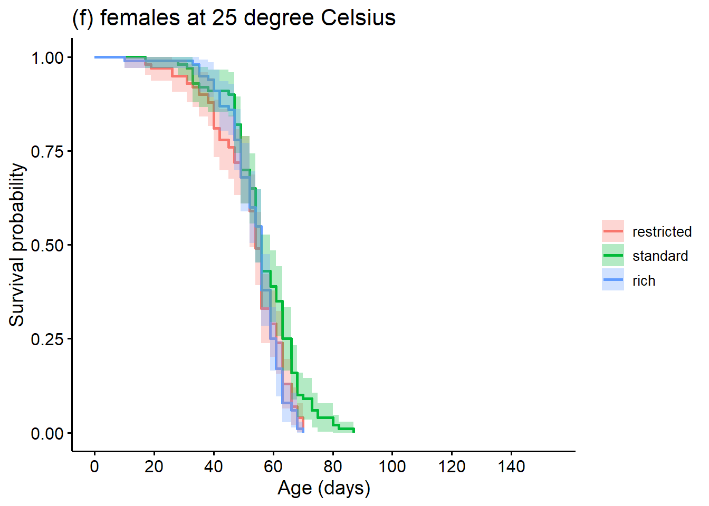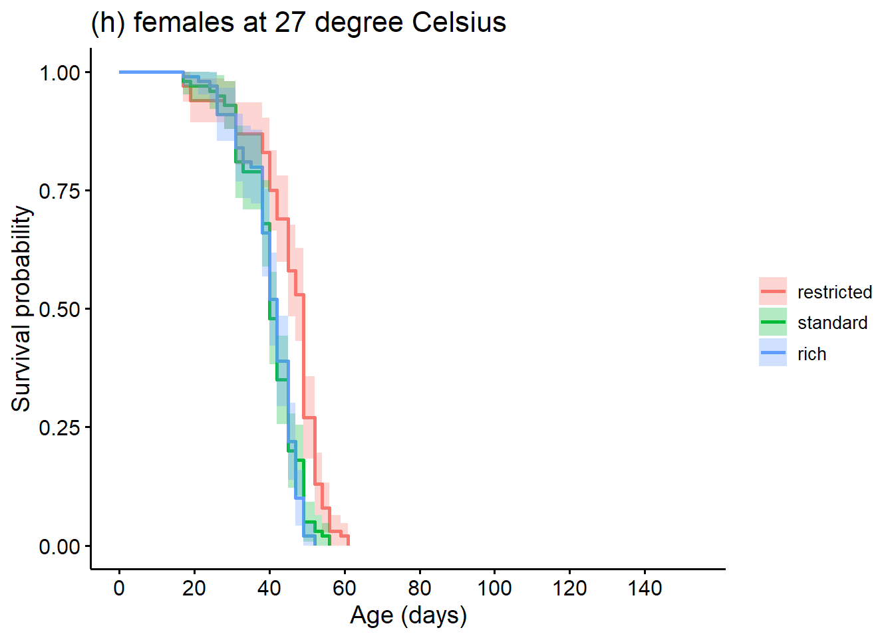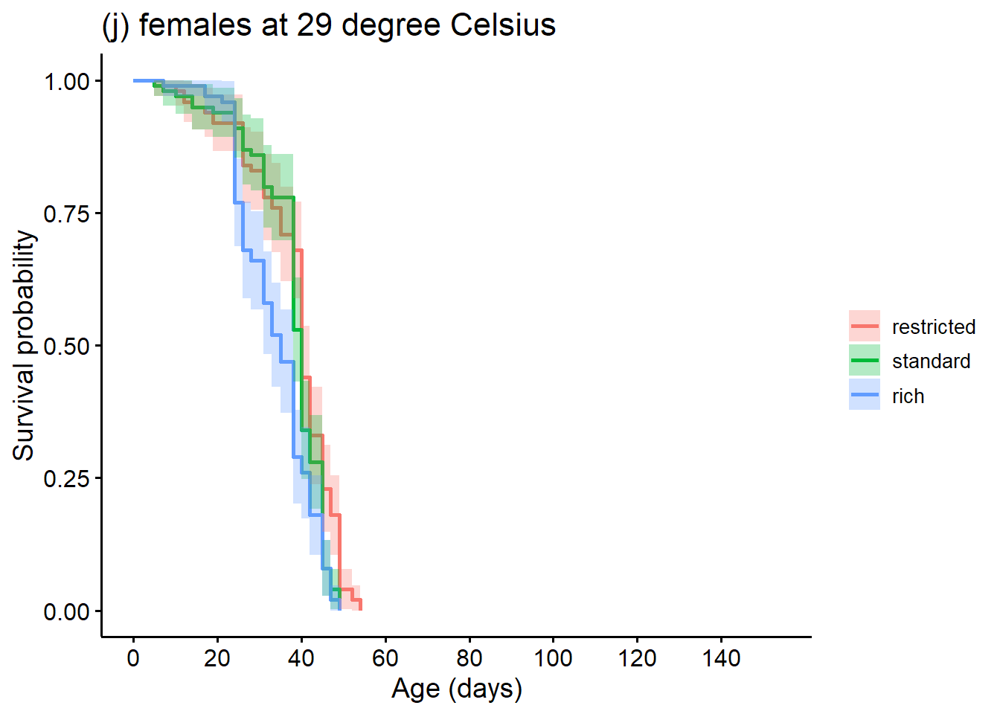
# Create grouping variables
survival$combined <- interaction(survival$sex, survival$diet, survival$temperature)
survival$specificvial <- interaction(survival$combined, survival$rep)
# Create subsets for each temperature
survival.21 <- subset(survival, temperature == "21")
survival.23 <- subset(survival, temperature == "23")
survival.25 <- subset(survival, temperature == "25")
survival.27 <- subset(survival, temperature == "27")
survival.29 <- subset(survival, temperature == "29")# Model specification
cox.female <- coxme(Surv(lifespan, status) ~ diet*temperature + (1|specificvial),
data= subset(survival, sex == "female"))
#Cox proportionality assumption test: all effects p < 0.001 => violated
cox.zph(coxph(Surv(lifespan, status) ~ diet*temperature, data= subset(survival, sex == "female"))) chisq df p
diet 209 2 <2e-16
temperature 460 1 <2e-16
diet:temperature 247 2 <2e-16
GLOBAL 677 5 <2e-16# Convert into long data format
survival$indspec <- with(survival, interaction(vial_id, ind))
survival_long <- survival %>% group_by(indspec) %>%
complete(lifespan = seq(1, max(lifespan)-1), nesting(vial_id, temperature, diet, sex, rep, ind, combined, specificvial), fill = list(status = 0))
survival_long$temp_fac <- as.factor(survival_long$temperature)
# Females
glmer_surv_fem_F0_1 <- glmer(status ~ diet * ns(temperature) + (1|specificvial),family = binomial, data = subset(survival_long, sex == "female"), nAGQ = 0)
glmer_surv_fem_F0_2 <- glmer(status ~ diet + ns(temperature) + (1|specificvial),family = "binomial", data = subset(survival_long, sex == "female"), nAGQ = 0)
glmer_surv_fem_F0_3 <- glmer(status ~ ns(temperature) + (1|specificvial),family = "binomial", data = subset(survival_long, sex == "female"), nAGQ = 0)
glmer_surv_fem_F0_4 <- glmer(status ~ diet + (1|specificvial),family = "binomial", data = subset(survival_long, sex == "female"), nAGQ = 0)
glmer_surv_fem_F0_5 <- glmer(status ~ 1 + (1|specificvial),family = "binomial", data = subset(survival_long, sex == "female"), nAGQ = 0)
# Males
glmer_surv_mal_F0_1 <- glmer(status ~ diet * ns(temperature) + (1|specificvial),family = "binomial", data = subset(survival_long, sex == "male"), nAGQ = 0)
glmer_surv_mal_F0_2 <- glmer(status ~ diet + ns(temperature) + (1|specificvial),family = "binomial", data = subset(survival_long, sex == "male"), nAGQ = 0)
glmer_surv_mal_F0_3 <- glmer(status ~ ns(temperature) + (1|specificvial),family = "binomial", data = subset(survival_long, sex == "male"), nAGQ = 0)
glmer_surv_mal_F0_4 <- glmer(status ~ diet + (1|specificvial),family = "binomial", data = subset(survival_long, sex == "male"), nAGQ = 0)
glmer_surv_mal_F0_5 <- glmer(status ~ 1 + (1|specificvial), family = "binomial", data = subset(survival_long, sex == "male"), nAGQ = 0)model.sel(glmer_surv_fem_F0_1, glmer_surv_fem_F0_2 ,glmer_surv_fem_F0_3, glmer_surv_fem_F0_4, glmer_surv_fem_F0_5, rank = AIC)Model selection table
(Int) dit ns(tmp) dit:ns(tmp) df logLik AIC delta
glmer_surv_fem_F0_1 -4.007 + 0.3958 + 7 -7489.566 14993.1 0.00
glmer_surv_fem_F0_2 -4.341 + 1.1750 5 -7506.142 15022.3 29.15
glmer_surv_fem_F0_3 -4.486 1.2160 3 -7511.680 15029.4 36.23
glmer_surv_fem_F0_4 -3.845 + 4 -7579.294 15166.6 173.45
glmer_surv_fem_F0_5 -4.002 2 -7584.942 15173.9 180.75
weight
glmer_surv_fem_F0_1 1
glmer_surv_fem_F0_2 0
glmer_surv_fem_F0_3 0
glmer_surv_fem_F0_4 0
glmer_surv_fem_F0_5 0
Models ranked by AIC(x)
Random terms (all models):
1 | specificvialmodel.sel(glmer_surv_mal_F0_1, glmer_surv_mal_F0_2 ,glmer_surv_mal_F0_3, glmer_surv_mal_F0_4, glmer_surv_mal_F0_5, rank = AIC)Model selection table
(Int) dit ns(tmp) dit:ns(tmp) df logLik AIC delta
glmer_surv_mal_F0_3 -4.258 1.598 3 -6948.044 13902.1 0.00
glmer_surv_mal_F0_2 -4.317 + 1.601 5 -6946.642 13903.3 1.20
glmer_surv_mal_F0_1 -4.275 + 1.497 + 7 -6946.322 13906.6 4.56
glmer_surv_mal_F0_5 -3.632 2 -7066.850 14137.7 235.61
glmer_surv_mal_F0_4 -3.687 + 4 -7066.288 14140.6 238.49
weight
glmer_surv_mal_F0_3 0.605
glmer_surv_mal_F0_2 0.333
glmer_surv_mal_F0_1 0.062
glmer_surv_mal_F0_5 0.000
glmer_surv_mal_F0_4 0.000
Models ranked by AIC(x)
Random terms (all models):
1 | specificvialf21 <- pairwise_survdiff(Surv(lifespan, status) ~ diet, data = subset(survival.21, sex == "female"))
print(f21, digits = 3)
Pairwise comparisons using Log-Rank test
data: subset(survival.21, sex == "female") and diet
0.4 1
1 <2e-16 -
1.5 <2e-16 0.123
P value adjustment method: BH f23 <- pairwise_survdiff(Surv(lifespan, status) ~ diet, data = subset(survival.23, sex == "female"))
print(f23, digits = 3)
Pairwise comparisons using Log-Rank test
data: subset(survival.23, sex == "female") and diet
0.4 1
1 0.000312 -
1.5 8.12e-05 0.485782
P value adjustment method: BH f25 <- pairwise_survdiff(Surv(lifespan, status) ~ diet, data = subset(survival.25, sex == "female"))
print(f25, digits = 3)
Pairwise comparisons using Log-Rank test
data: subset(survival.25, sex == "female") and diet
0.4 1
1 0.0185 -
1.5 0.7187 0.0185
P value adjustment method: BH f27 <- pairwise_survdiff(Surv(lifespan, status) ~ diet, data = subset(survival.27, sex == "female"))
print(f27, digits = 3)
Pairwise comparisons using Log-Rank test
data: subset(survival.27, sex == "female") and diet
0.4 1
1 1.21e-07 -
1.5 2.21e-10 0.514
P value adjustment method: BH f29 <- pairwise_survdiff(Surv(lifespan, status) ~ diet, data = subset(survival.29, sex == "female"))
print(f29, digits = 3)
Pairwise comparisons using Log-Rank test
data: subset(survival.29, sex == "female") and diet
0.4 1
1 0.0156 -
1.5 1.61e-05 0.0074
P value adjustment method: BH m21 <- pairwise_survdiff(Surv(lifespan, status) ~ diet, data = subset(survival.21, sex == "male"))
print(m21, digits = 3)
Pairwise comparisons using Log-Rank test
data: subset(survival.21, sex == "male") and diet
0.4 1
1 0.248 -
1.5 0.428 0.352
P value adjustment method: BH m23 <- pairwise_survdiff(Surv(lifespan, status) ~ diet, data = subset(survival.23, sex == "male"))
print(m23, digits = 3)
Pairwise comparisons using Log-Rank test
data: subset(survival.23, sex == "male") and diet
0.4 1
1 0.3993 -
1.5 0.0727 0.0239
P value adjustment method: BH m25 <- pairwise_survdiff(Surv(lifespan, status) ~ diet, data = subset(survival.25, sex == "male"))
print(m25, digits = 3)
Pairwise comparisons using Log-Rank test
data: subset(survival.25, sex == "male") and diet
0.4 1
1 0.0367 -
1.5 2.17e-05 0.0178
P value adjustment method: BH m27 <- pairwise_survdiff(Surv(lifespan, status) ~ diet, data = subset(survival.27, sex == "male"))
print(m27, digits = 3)
Pairwise comparisons using Log-Rank test
data: subset(survival.27, sex == "male") and diet
0.4 1
1 1.28e-05 -
1.5 8.19e-14 6.44e-05
P value adjustment method: BH m29 <- pairwise_survdiff(Surv(lifespan, status) ~ diet, data = subset(survival.29, sex == "male"))
print(m29, digits = 3)
Pairwise comparisons using Log-Rank test
data: subset(survival.29, sex == "male") and diet
0.4 1
1 0.0607 -
1.5 0.2118 0.1460
P value adjustment method: BH # plot(survivalF1$lifespan) # ok: no off-values/outliers
# max(survivalF1$lifespan) # max. lifespan = 100 days
survivalF1 %>% group_by(par_temp, par_diet, sex) %>%
summarise(., mean = mean(lifespan), se = sd(lifespan)/sqrt(length(lifespan)), sd = sd(lifespan),
median = median(lifespan), n_vials = n_distinct(vial_id), n_inds = n())# A tibble: 30 × 9
# Groups: par_temp, par_diet [15]
par_temp par_diet sex mean se sd median n_vials n_inds
<dbl> <fct> <chr> <dbl> <dbl> <dbl> <dbl> <int> <int>
1 21 0.4 f 76.5 1.93 14.9 79 4 60
2 21 0.4 m 59.8 1.74 13.5 61 4 60
3 21 1 f 81.1 1.15 8.93 82 4 60
4 21 1 m 58.2 1.71 13.2 59 4 60
5 21 1.5 f 81 1.02 7.88 80 4 60
6 21 1.5 m 57.4 1.96 15.2 59 4 60
7 23 0.4 f 76.4 2.33 18.0 80 4 60
8 23 0.4 m 57.5 1.72 13.3 57 4 60
9 23 1 f 78.6 1.84 14.2 82 4 60
10 23 1 m 56.4 1.93 14.9 57 4 60
# ℹ 20 more rowsbootF1.ls <- groupwiseMean(lifespan ~ par_temp*par_diet*sex, data = survivalF1, boot = T, bca = T) #5000 bootstrap replicates for CI
bootF1.ls par_temp par_diet sex n Mean Boot.mean Conf.level Trad.lower Trad.upper
1 21 0.4 f 60 76.5 76.5 0.95 72.6 80.4
2 21 0.4 m 60 59.8 59.8 0.95 56.3 63.3
3 21 1 f 60 81.1 81.1 0.95 78.8 83.4
4 21 1 m 60 58.2 58.2 0.95 54.8 61.6
5 21 1.5 f 60 81.0 81.0 0.95 79.0 83.0
6 21 1.5 m 60 57.4 57.4 0.95 53.5 61.3
7 23 0.4 f 60 76.4 76.5 0.95 71.7 81.1
8 23 0.4 m 60 57.5 57.5 0.95 54.1 61.0
9 23 1 f 60 78.6 78.6 0.95 75.0 82.3
10 23 1 m 60 56.4 56.4 0.95 52.5 60.2
11 23 1.5 f 60 77.8 77.8 0.95 75.0 80.6
12 23 1.5 m 60 60.9 60.9 0.95 57.1 64.7
13 25 0.4 f 60 81.1 81.1 0.95 79.4 82.7
14 25 0.4 m 60 58.6 58.6 0.95 55.6 61.6
15 25 1 f 60 80.5 80.5 0.95 78.1 82.9
16 25 1 m 60 55.7 55.7 0.95 51.9 59.5
17 25 1.5 f 60 80.0 80.1 0.95 77.1 83.0
18 25 1.5 m 60 55.6 55.6 0.95 52.2 58.9
19 27 0.4 f 60 77.0 77.0 0.95 74.0 79.9
20 27 0.4 m 60 57.8 57.8 0.95 55.1 60.6
21 27 1 f 60 77.0 77.0 0.95 75.0 79.0
22 27 1 m 60 59.3 59.3 0.95 55.8 62.9
23 27 1.5 f 60 78.8 78.9 0.95 75.3 82.4
24 27 1.5 m 60 59.2 59.2 0.95 56.5 61.8
25 29 0.4 f 60 77.3 77.3 0.95 75.4 79.3
26 29 0.4 m 60 57.3 57.3 0.95 53.3 61.4
27 29 1 f 60 80.1 80.1 0.95 77.0 83.2
28 29 1 m 60 58.0 57.9 0.95 54.3 61.6
29 29 1.5 f 60 81.0 81.0 0.95 78.8 83.3
30 29 1.5 m 60 56.3 56.3 0.95 53.0 59.6
Bca.lower Bca.upper
1 71.5 79.4
2 56.5 63.1
3 78.7 83.2
4 54.5 61.2
5 78.9 82.9
6 53.1 61.0
7 70.8 80.1
8 53.8 60.6
9 73.7 81.5
10 52.4 59.8
11 74.4 80.1
12 56.9 64.3
13 79.4 82.6
14 55.6 61.4
15 77.8 82.4
16 51.5 59.0
17 76.7 82.7
18 52.1 58.6
19 72.1 79.0
20 55.2 60.6
21 74.8 78.7
22 55.7 62.6
23 74.9 81.7
24 56.4 61.6
25 75.5 79.2
26 53.0 60.8
27 75.5 82.2
28 54.4 61.2
29 78.5 83.0
30 52.8 59.2mycols <- colors()[c(30, 62, 119, 504, 554)]
plotF1.meanlifespan.m <- ggplot(data= subset(bootF1.ls, sex== "m"), aes(x= as.factor(par_diet), y= Boot.mean, fill= as.factor(par_temp))) +
#scale_fill_grey(start=0.8, end=0.3, name = "Temperature") +
scale_fill_manual(values= mycols, name = "Parental\ntemperature") +
geom_bar(position=position_dodge(), stat = "identity", colour="black") +
#geom_point(size = 3.5, position=position_dodge(0.1)) +
geom_errorbar(aes(ymin= Bca.lower, ymax= Bca.upper), width=.4, colour="black",
position=position_dodge(0.9)) +
expand_limits(y = 82) +
ylab("Lifespan (days)") +
xlab("Parental diet") +
ggtitle("Male lifespan (mean \U00B1 95% CI)") +
theme_bw(base_size = 18)+
theme(panel.grid.major = element_blank(),panel.grid.minor = element_blank(),
panel.border = element_blank(),
axis.line.x = element_line(), axis.line.y = element_line())
plotF1.meanlifespan.f <- ggplot(data= subset(bootF1.ls, sex== "f"), aes(x= as.factor(par_diet), y= Boot.mean, fill= as.factor(par_temp))) +
#scale_fill_grey(start=0.8, end=0.3, name = "Temperature") +
scale_fill_manual(values= mycols, name = "Parental\ntemperature") +
geom_bar(position=position_dodge(), stat = "identity", colour="black") +
#geom_point(size = 3.5, position=position_dodge(0.1)) +
geom_errorbar(aes(ymin= Bca.lower, ymax= Bca.upper), width=.4, colour="black",
position=position_dodge(0.9)) +
expand_limits(y = 82) +
ylab("Lifespan (days)") +
xlab("Parental diet") +
ggtitle("Female lifespan (mean \U00B1 95% CI)") +
theme_bw(base_size = 18)+
theme(panel.grid.major = element_blank(),panel.grid.minor = element_blank(),
panel.border = element_blank(),
axis.line.x = element_line(), axis.line.y = element_line())
plotF1.meanlifespan.m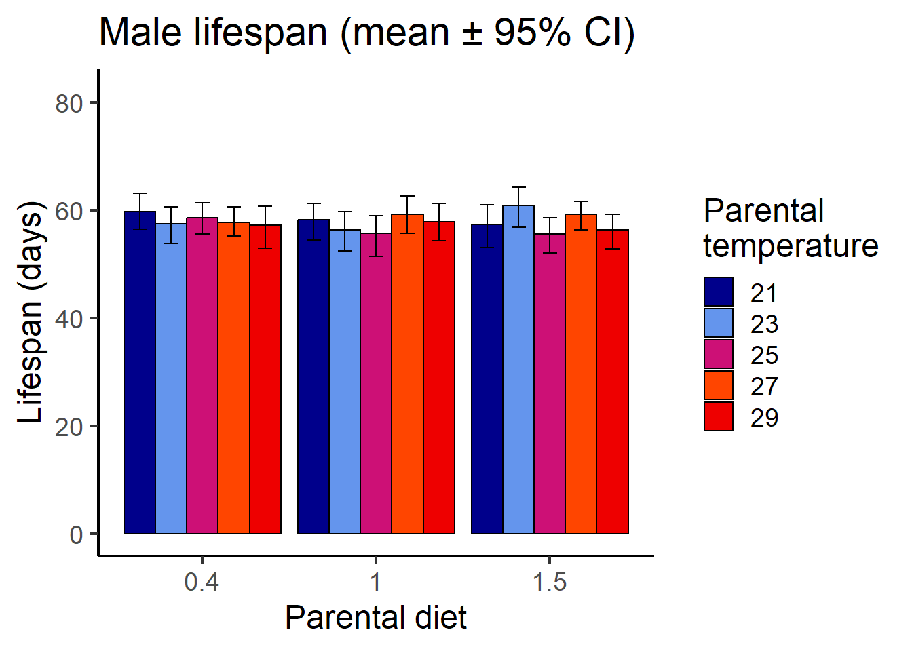
plotF1.meanlifespan.f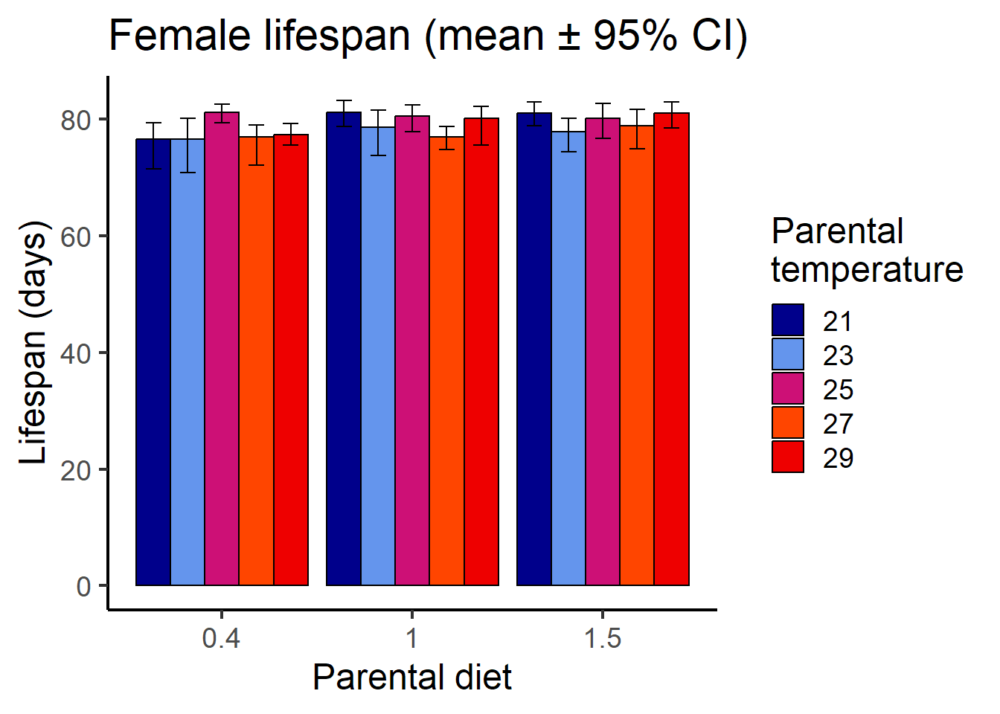
# Create grouping variables
survivalF1$combined <- interaction(survivalF1$sex, survivalF1$par_diet, survivalF1$par_temp)
survivalF1$specificvial <- interaction(survivalF1$combined, survivalF1$rep)# Model specification: par_eff represents either maternal or paternal effects
coxF1.f1 <- coxme(Surv(lifespan, status) ~ par_eff*par_temp*par_diet + (1|specificvial), data = subset(survivalF1, sex == "f"))
# Model summary (custom function extracts 3 digit z- and p-value)
extract_coxme_table <- function (mod){
beta <- mod$coefficients #$fixed is not needed
nvar <- length(beta)
nfrail <- nrow(mod$var) - nvar
se <- sqrt(diag(mod$var)[nfrail + 1:nvar])
z<- round(beta/se, 3)
p<- signif(1 - pchisq((beta/se)^2, 1), 3)
table=data.frame(cbind(z,p))
return(table)
}
#extract_coxme_table(coxF1.f1)
summary(coxF1.f1, digits = 3)Cox mixed-effects model fit by maximum likelihood
Data: subset(survivalF1, sex == "f")
events, n = 900, 900
Iterations= 24 123
NULL Integrated Fitted
Log-likelihood -5226.476 -5208.595 -5192.722
Chisq df p AIC BIC
Integrated loglik 35.8 12.0 3.54e-04 11.8 -45.9
Penalized loglik 67.5 22.1 1.72e-06 23.3 -82.8
Model: Surv(lifespan, status) ~ par_eff * par_temp * par_diet + (1 | specificvial)
Fixed coefficients
coef exp(coef) se(coef) z p
par_effpat 0.36091 1.435 1.0561 0.34 0.73
par_temp 0.05224 1.054 0.0342 1.53 0.13
par_diet1 -0.81279 0.444 1.2200 -0.67 0.51
par_diet1.5 1.09591 2.992 1.2206 0.90 0.37
par_effpat:par_temp -0.02540 0.975 0.0420 -0.61 0.55
par_effpat:par_diet1 0.73790 2.092 1.4747 0.50 0.62
par_effpat:par_diet1.5 0.11981 1.127 1.4800 0.08 0.94
par_temp:par_diet1 0.01836 1.019 0.0484 0.38 0.70
par_temp:par_diet1.5 -0.05926 0.942 0.0485 -1.22 0.22
par_effpat:par_temp:par_diet1 -0.01648 0.984 0.0586 -0.28 0.78
par_effpat:par_temp:par_diet1.5 0.00242 1.002 0.0588 0.04 0.97
Random effects
Group Variable Std Dev Variance
specificvial Intercept 0.1716 0.0294 f1.zph <- coxph(Surv(lifespan, status) ~ par_eff*par_temp*par_diet, data = survivalF1)
cox.zph(coxph(Surv(lifespan, status) ~ par_eff*par_temp*par_diet, data = survivalF1)) chisq df p
par_eff 3.78e-05 1 0.995
par_temp 2.34e+00 1 0.126
par_diet 6.71e+00 2 0.035
par_eff:par_temp 3.16e-03 1 0.955
par_eff:par_diet 1.86e+00 2 0.395
par_temp:par_diet 5.78e+00 2 0.056
par_eff:par_temp:par_diet 2.08e+00 2 0.354
GLOBAL 1.73e+01 11 0.099# coxF1.f1 without 3-way interaction par_eff:par_temp:par_diet
coxF1.f2 <- coxme(Surv(lifespan, status) ~ par_eff*par_temp*par_diet - par_eff:par_temp:par_diet + (1|specificvial),
data = subset(survivalF1, sex == "f"))
# Model summary (custom function extracts 3 digit z- and p-value)
extract_coxme_table <- function (mod){
beta <- mod$coefficients #$fixed is not needed
nvar <- length(beta)
nfrail <- nrow(mod$var) - nvar
se <- sqrt(diag(mod$var)[nfrail + 1:nvar])
z<- round(beta/se, 3)
p<- signif(1 - pchisq((beta/se)^2, 1), 3)
table=data.frame(cbind(z,p))
return(table)
}
#extract_coxme_table(coxF1.f2)
#summary(coxF1.f2, digits = 3)
#- par_temp:par_diet
coxF1.f3 <- coxme(Surv(lifespan, status) ~ par_eff*par_temp*par_diet - par_eff:par_temp:par_diet - par_temp:par_diet + (1|specificvial),
data = subset(survivalF1, sex == "f"))
#summary(coxF1.f3, digits = 3)
#- par_temp:par_diet
coxF1.f4 <- coxme(Surv(lifespan, status) ~ par_eff*par_temp*par_diet - par_eff:par_temp:par_diet - par_temp:par_diet - par_eff:par_diet + (1|specificvial),
data = subset(survivalF1, sex == "f"))
#summary(coxF1.f4, digits = 3)
#- par_eff:par_temp (no interactions left)
coxF1.f5 <- coxme(Surv(lifespan, status) ~ par_eff+par_temp+par_diet + (1|specificvial),
data = subset(survivalF1, sex == "f"))
#summary(coxF1.f5, digits = 3)
#- par_diet
coxF1.f6 <- coxme(Surv(lifespan, status) ~ par_eff+par_temp + (1|specificvial),
data = subset(survivalF1, sex == "f"))
#summary(coxF1.f6, digits = 3)
#- par_temp
coxF1.f7 <- coxme(Surv(lifespan, status) ~ par_eff + (1|specificvial),
data = subset(survivalF1, sex == "f"))
#summary(coxF1.f7, digits = 3)
# only with par_diet
coxF1.f7b <- coxme(Surv(lifespan, status) ~ par_diet + (1|specificvial),
data = subset(survivalF1, sex == "f"))
#summary(coxF1.f7b, digits = 3)
# NULL
coxF1.f8 <- coxme(Surv(lifespan, status) ~ 1 + (1|specificvial),
data = subset(survivalF1, sex == "f"))
#summary(coxF1.f8, digits = 3)
# Model comparison
AIC_addCOX_femaleF1 <- model.sel(coxF1.f1, coxF1.f2, coxF1.f3, coxF1.f4, coxF1.f5, coxF1.f6, coxF1.f7, coxF1.f8, rank = "AIC")
AIC_addCOX_female_resF1 <- as.data.frame(AIC_addCOX_femaleF1)[9:12]
AIC_addCOX_female_resF1 logLik AIC delta weight
coxF1.f2 -5199.440 10439.32 0.0000000 0.25749306
coxF1.f5 -5202.193 10439.67 0.3473173 0.21644449
coxF1.f4 -5201.406 10440.06 0.7368841 0.17813660
coxF1.f3 -5199.553 10440.16 0.8439935 0.16884751
coxF1.f6 -5202.177 10442.42 3.0969285 0.05473638
coxF1.f7 -5202.213 10442.81 3.4945308 0.04486811
coxF1.f8 -5203.301 10442.94 3.6205511 0.04212819
coxF1.f1 -5199.493 10443.18 3.8615519 0.03734566# Model specification
coxF1.m <- coxme(Surv(lifespan, status) ~ par_eff*par_temp*par_diet + (1|specificvial),
data= subset(survivalF1, sex== "m"))
# Model summary
#extract_coxme_table(coxF1.m)
summary(coxF1.m, digits = 3)Cox mixed-effects model fit by maximum likelihood
Data: subset(survivalF1, sex == "m")
events, n = 900, 900
Iterations= 7 31
NULL Integrated Fitted
Log-likelihood -5226.476 -5220.4 -5213.712
Chisq df p AIC BIC
Integrated loglik 12.2 12.0 0.4336 -11.85 -69.5
Penalized loglik 25.5 16.1 0.0635 -6.72 -84.1
Model: Surv(lifespan, status) ~ par_eff * par_temp * par_diet + (1 | specificvial)
Fixed coefficients
coef exp(coef) se(coef) z p
par_effpat -1.250379 0.286 1.0141 -1.23 0.22
par_temp -0.004071 0.996 0.0297 -0.14 0.89
par_diet1 -0.171654 0.842 1.0559 -0.16 0.87
par_diet1.5 -0.688358 0.502 1.0687 -0.64 0.52
par_effpat:par_temp 0.042315 1.043 0.0403 1.05 0.29
par_effpat:par_diet1 1.852480 6.376 1.4485 1.28 0.20
par_effpat:par_diet1.5 0.255607 1.291 1.4541 0.18 0.86
par_temp:par_diet1 0.004364 1.004 0.0419 0.10 0.92
par_temp:par_diet1.5 0.022836 1.023 0.0425 0.54 0.59
par_effpat:par_temp:par_diet1 -0.069936 0.932 0.0576 -1.21 0.22
par_effpat:par_temp:par_diet1.5 0.000593 1.001 0.0578 0.01 0.99
Random effects
Group Variable Std Dev Variance
specificvial Intercept 0.09655 0.00932 cox.zph(coxph(Surv(lifespan, status) ~ par_eff*par_temp*par_diet, data = subset(survivalF1, sex== "m"))) chisq df p
par_eff 0.0720 1 0.79
par_temp 1.5640 1 0.21
par_diet 4.2275 2 0.12
par_eff:par_temp 0.0574 1 0.81
par_eff:par_diet 3.5909 2 0.17
par_temp:par_diet 4.2193 2 0.12
par_eff:par_temp:par_diet 3.8404 2 0.15
GLOBAL 10.9938 11 0.44# coxF1.m without 3-way interaction par_eff:par_temp:par_diet
coxF1.m2 <- coxme(Surv(lifespan, status) ~ par_eff*par_temp*par_diet - par_eff:par_temp:par_diet + (1|specificvial),
data = subset(survivalF1, sex == "m"))
# Model summary (custom function extracts 3 digit z- and p-value)
extract_coxme_table <- function (mod){
beta <- mod$coefficients #$fixed is not needed
nvar <- length(beta)
nfrail <- nrow(mod$var) - nvar
se <- sqrt(diag(mod$var)[nfrail + 1:nvar])
z<- round(beta/se, 3)
p<- signif(1 - pchisq((beta/se)^2, 1), 3)
table=data.frame(cbind(z,p))
return(table)
}
#extract_coxme_table(coxF1.m2)
#summary(coxF1.m2, digits = 3)
#- par_temp:par_diet
coxF1.m3 <- coxme(Surv(lifespan, status) ~ par_eff*par_temp*par_diet - par_eff:par_temp:par_diet - par_temp:par_diet + (1|specificvial),
data = subset(survivalF1, sex == "m"))
#summary(coxF1.m3, digits = 3)
#- par_temp:par_diet
coxF1.m4 <- coxme(Surv(lifespan, status) ~ par_eff*par_temp*par_diet - par_eff:par_temp:par_diet - par_temp:par_diet - par_eff:par_diet + (1|specificvial),
data = subset(survivalF1, sex == "m"))
#summary(coxF1.m4, digits = 3)
#- par_eff:par_temp (no interactions left)
coxF1.m5 <- coxme(Surv(lifespan, status) ~ par_eff+par_temp+par_diet + (1|specificvial),
data = subset(survivalF1, sex == "m"))
#summary(coxF1.m5, digits = 3)
#- par_diet
coxF1.m6 <- coxme(Surv(lifespan, status) ~ par_eff+par_temp + (1|specificvial),
data = subset(survivalF1, sex == "m"))
#summary(coxF1.m6, digits = 3)
#- par_temp
coxF1.m7 <- coxme(Surv(lifespan, status) ~ par_eff + (1|specificvial),
data = subset(survivalF1, sex == "m"))
#summary(coxF1.m7, digits = 3)
# NULL
coxF1.m8 <- coxme(Surv(lifespan, status) ~ 1 + (1|specificvial),
data = subset(survivalF1, sex == "m"))
#summary(coxF1.m8, digits = 3)
# Model comparison
AIC_addCOX_maleF1 <- model.sel(coxF1.m, coxF1.m2, coxF1.m3, coxF1.m4, coxF1.m5, coxF1.m6, coxF1.m7, coxF1.m8, rank = "AIC")
AIC_addCOX_male_resF1 <- as.data.frame(AIC_addCOX_maleF1)[9:12]
AIC_addCOX_male_resF1 logLik AIC delta weight
coxF1.m8 -5219.969 10457.59 0.0000000 0.381550488
coxF1.m7 -5219.489 10458.37 0.7822078 0.258046372
coxF1.m6 -5219.372 10458.54 0.9507807 0.237187936
coxF1.m5 -5219.372 10461.33 3.7356726 0.058933336
coxF1.m4 -5218.956 10462.69 5.1052182 0.029714468
coxF1.m3 -5217.067 10464.10 6.5077375 0.014737193
coxF1.m2 -5217.278 10464.20 6.6094970 0.014006124
coxF1.m -5216.855 10465.95 8.3644835 0.005824082
sessionInfo()R version 4.3.1 (2023-06-16 ucrt)
Platform: x86_64-w64-mingw32/x64 (64-bit)
Running under: Windows 10 x64 (build 19043)
Matrix products: default
locale:
[1] LC_COLLATE=English_United Kingdom.utf8
[2] LC_CTYPE=English_United Kingdom.utf8
[3] LC_MONETARY=English_United Kingdom.utf8
[4] LC_NUMERIC=C
[5] LC_TIME=English_United Kingdom.utf8
time zone: Europe/London
tzcode source: internal
attached base packages:
[1] splines stats graphics grDevices utils datasets methods
[8] base
other attached packages:
[1] kableExtra_1.3.4 sjPlot_2.8.14 survminer_0.4.9 ggpubr_0.6.0
[5] MuMIn_1.47.5 mgcv_1.8-42 nlme_3.1-162 lme4_1.1-33
[9] Matrix_1.5-4.1 coxme_2.2-18.1 bdsmatrix_1.3-6 survival_3.5-5
[13] rcompanion_2.4.30 lubridate_1.9.2 forcats_1.0.0 stringr_1.5.0
[17] purrr_1.0.1 tidyr_1.3.0 tibble_3.2.1 ggplot2_3.4.2
[21] tidyverse_2.0.0 reshape2_1.4.4 dplyr_1.1.2 readr_2.1.4
[25] workflowr_1.7.0
loaded via a namespace (and not attached):
[1] libcoin_1.0-9 rstudioapi_0.14 jsonlite_1.8.5
[4] magrittr_2.0.3 TH.data_1.1-2 estimability_1.4.1
[7] modeltools_0.2-23 farver_2.1.1 nloptr_2.0.3
[10] rmarkdown_2.22 fs_1.6.2 vctrs_0.6.3
[13] minqa_1.2.5 webshot_0.5.4 rstatix_0.7.2
[16] htmltools_0.5.5 broom_1.0.5 cellranger_1.1.0
[19] sjmisc_2.8.9 sass_0.4.6 bslib_0.5.0
[22] plyr_1.8.8 sandwich_3.0-2 emmeans_1.8.6
[25] rootSolve_1.8.2.3 zoo_1.8-12 cachem_1.0.8
[28] whisker_0.4.1 lifecycle_1.0.3 pkgconfig_2.0.3
[31] sjlabelled_1.2.0 R6_2.5.1 fastmap_1.1.1
[34] digest_0.6.31 Exact_3.2 colorspace_2.1-0
[37] ps_1.7.5 rprojroot_2.0.3 labeling_0.4.2
[40] fansi_1.0.4 km.ci_0.5-6 timechange_0.2.0
[43] httr_1.4.6 abind_1.4-5 compiler_4.3.1
[46] proxy_0.4-27 bit64_4.0.5 withr_2.5.0
[49] backports_1.4.1 carData_3.0-5 performance_0.10.4
[52] highr_0.10 ggsignif_0.6.4 MASS_7.3-60
[55] sjstats_0.18.2 gld_2.6.6 tools_4.3.1
[58] lmtest_0.9-40 httpuv_1.6.11 glue_1.6.2
[61] callr_3.7.3 promises_1.2.0.1 grid_4.3.1
[64] getPass_0.2-2 generics_0.1.3 gtable_0.3.3
[67] nortest_1.0-4 tzdb_0.4.0 KMsurv_0.1-5
[70] class_7.3-22 data.table_1.14.8 lmom_2.9
[73] hms_1.1.3 xml2_1.3.4 car_3.1-2
[76] coin_1.4-2 utf8_1.2.3 pillar_1.9.0
[79] vroom_1.6.3 later_1.3.1 lattice_0.21-8
[82] bit_4.0.5 tidyselect_1.2.0 knitr_1.43
[85] git2r_0.32.0 gridExtra_2.3 svglite_2.1.1
[88] stats4_4.3.1 xfun_0.39 expm_0.999-7
[91] matrixStats_1.0.0 stringi_1.7.12 yaml_2.3.7
[94] boot_1.3-28.1 evaluate_0.21 codetools_0.2-19
[97] multcompView_0.1-9 cli_3.6.1 systemfonts_1.0.4
[100] xtable_1.8-4 DescTools_0.99.49 munsell_0.5.0
[103] processx_3.8.1 jquerylib_0.1.4 survMisc_0.5.6
[106] modelr_0.1.11 Rcpp_1.0.10 readxl_1.4.2
[109] ggeffects_1.2.3 parallel_4.3.1 bayestestR_0.13.1
[112] viridisLite_0.4.2 mvtnorm_1.2-2 scales_1.2.1
[115] e1071_1.7-13 crayon_1.5.2 insight_0.19.2
[118] rlang_1.1.1 cowplot_1.1.1 rvest_1.0.3
[121] multcomp_1.4-25